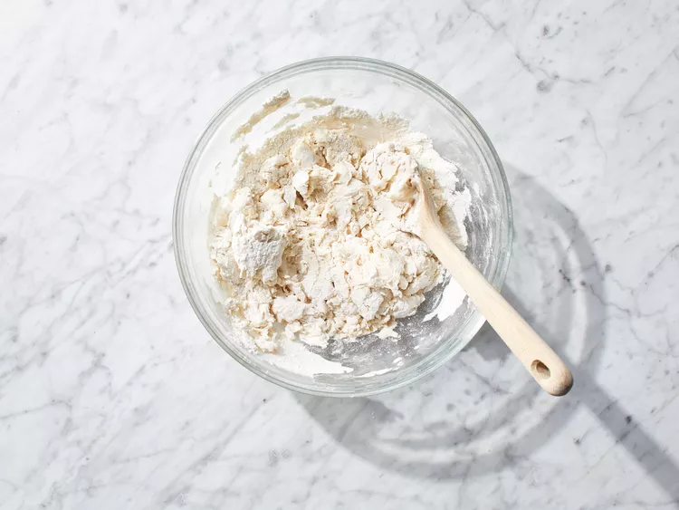
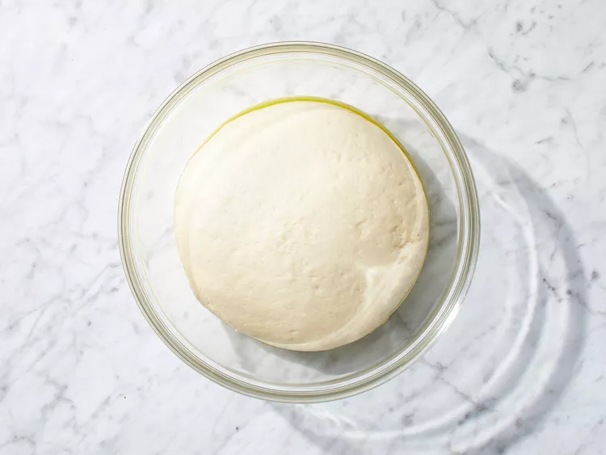
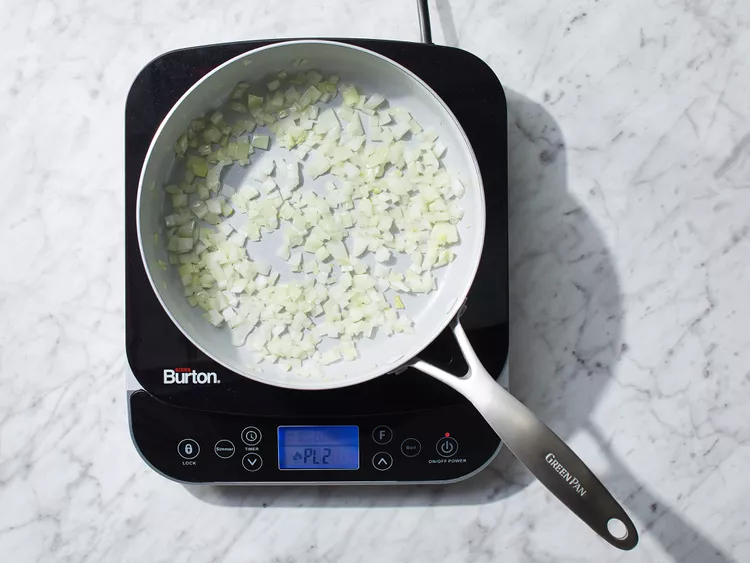
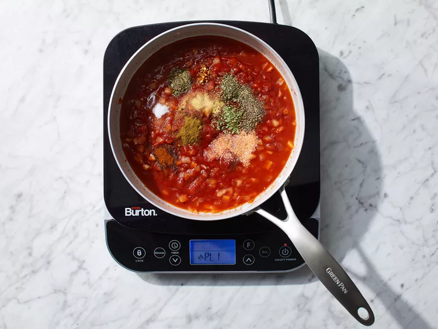
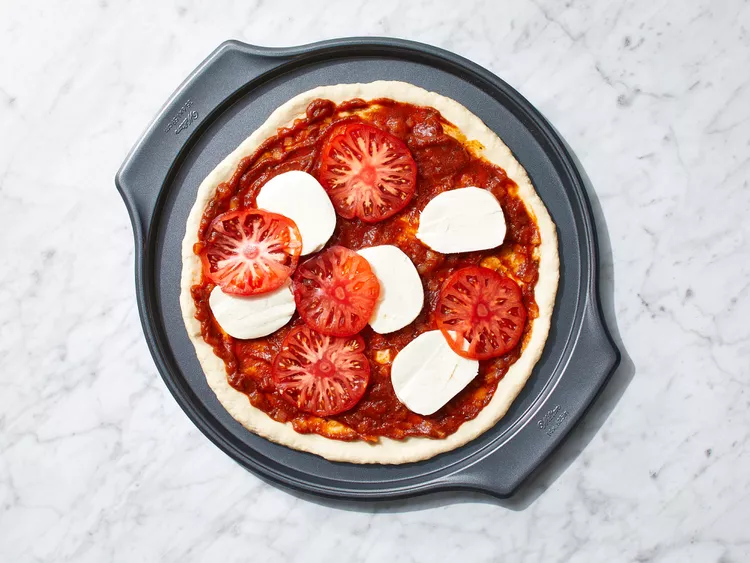
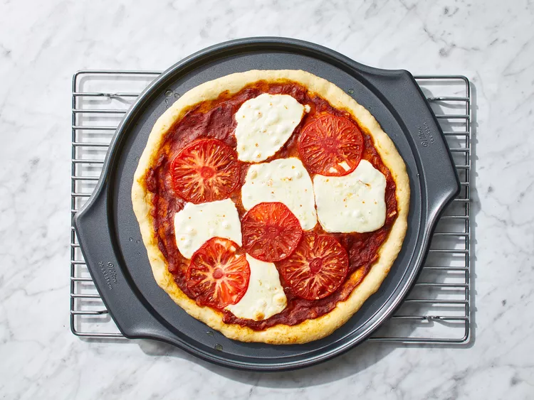

Make the dough: Dissolve yeast in lukewarm water in a small bowl. Let stand until creamy, about 10 minutes.
Combine flour, shortening, and salt in a large bowl; add yeast mixture and stir until dough comes together. Knead dough on a lightly floured surface until smooth and elastic, about 8 minutes.

Lightly oil a large bowl. Place dough into the bowl and turn to coat with oil. Cover with a damp cloth and let rise in a warm place until doubled in volume, about 45 minutes.

Meanwhile, make the sauce: Heat oil in a small saucepan over medium heat. Add onion and sauté until tender, about 5 minutes.

Stir in tomato paste, water, salt, sugar, oregano, garlic powder, basil, marjoram, cumin, chili powder, red pepper flakes, and black pepper; simmer for 15 to 20 minutes.

Preheat the oven to 400 degrees F (200 degrees C).
Divide dough in half. Roll each half into a 12-inch circle. Place dough onto two 12-inch pizza pans; cover with sauce and mozzarella cheese.

Bake in the preheated oven until crusts are golden brown, about 20 minutes.
